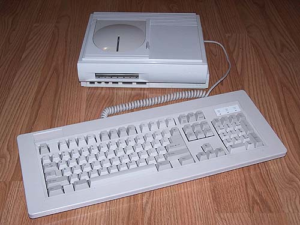

|
The Atari Microbox Codename: "Painter"

|
The Atari MicroFalcon030
Front & Rear views.
After receiving such heavy criticism from its users over using the same
tired old Atari 1040STe case. Atari went to work on a new Falcon
system called the Atari MicroFalcon030. This new system would
be contain in a small HP Workstation looking case which was a very pleasant
and welcomed change from Atari. The unit would have a built in 3.5"
floppy disk drive, ports in the front for Power, keyboard, mouse and probably
MIDI. The case could easily pop off for quick convenient access
to... SLOTS?!?!? Yes, slots 3 32bit slots for long wanted
expandability for the Atari 16/23 bit systems.
The processor was to be a 68030, speed is unknown at this time.
Atari Historical Society recently acquired an actual fully functional Falcon030
motherboard and is eagerly awaiting its arrival. The
hard drive is standard IDE and memory could be installed using standard
SIMM modules. This computer had a look and feel
that every Atari computer user had wanted for so long, plus the expansion
capabilities which were well over due. (The VME bus slots in the
Mega STE and TT030 were crippled and didn't give the expandability that
the 16/23's truly needed). As with many other Atari
ST projects, the MicroFalcon030 would not see the light of day, most Atari
computer users were fortunate enough that Atari released the Falcon030
before stopping production of computers all together.